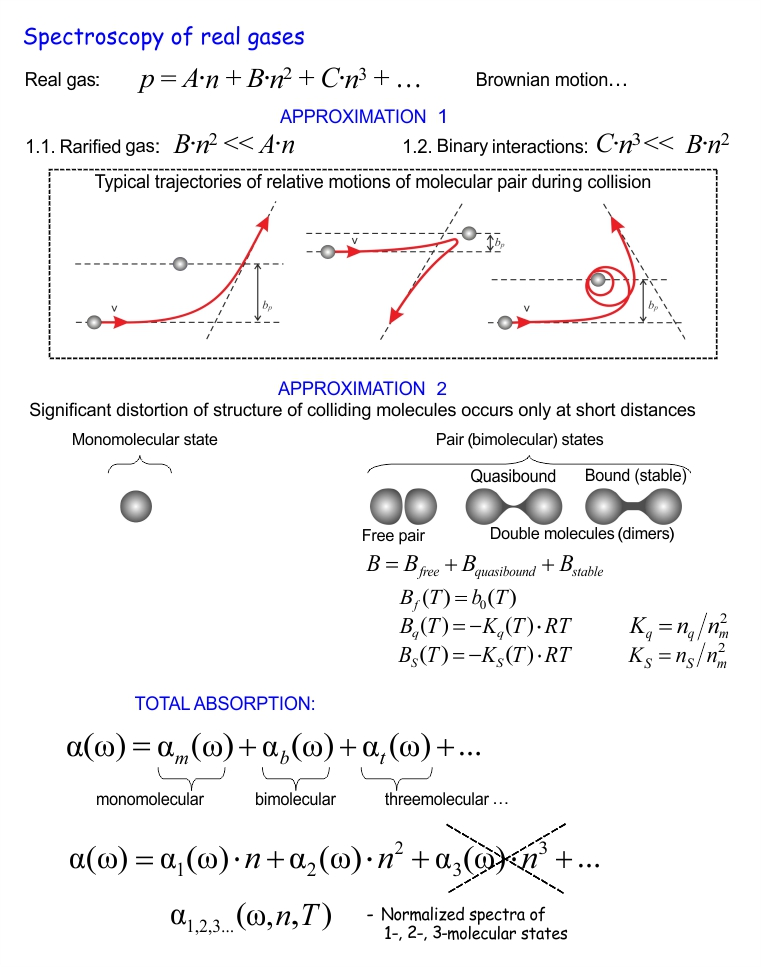

Main directions of activity  Studies of the molecular spectra
Spectroscopy of real gases Studies of the molecular spectra
Spectroscopy of real gases
Spectroscopy of real gases
|  |
What is absorption medium from the point of view of molecular spectroscopy? It is real gas.
Brownian motion. About 1019 molecules permanently interacting with each-other in a
cubic centimeter... The result cannot be rigorously calculated at the state-of-the-art.
So we use two major approximations:
- Gas is rarified and close to ideal:
- the second term of the equation of state is much less than the first one;
- tripple interactions are negligible, so the third term is much less than the second one.
Thus, only pair interactions are left and the task becomes solvable (we deal only with 2 molecules).
The interaction potential can be found from first principle calculations for simplest light
molecules. This allows numerical calculation of collision dynamics: trajectories of motion,
energy exchange, etc. Three most typical cases of relative motion are shown in the figure above.
- Significant distortion of the structure of colliding molecules occurs only at very short distances.
This allows separating monomolecular states, when motion of an almost unperturbed molecule is
determined by the pair interaction potential and bimolecular states. The latter include
- free pairs (one touch collision with a short living transient pair state);
- quasibound dimers (“orbiting” collision case forming double molecule with total internal energy
above the intermolecular bond dissociation limit);
- stable dimers (double molecule with total energy below the dissociation).
The total number of pair states is determined by the second virial
coefficient, which can be divided into corresponding parts. The free pairs (action of repulsive
forces) are related to the excluded volume and the dimeric parts (molecules stuck together –
action of attraction forces) are characterized by the corresponding equilibrium constants.
Within these approximations, the total absorption in a real gas can be represented as a sum of
spectra of different molecular states (monomolecular, bimolecular, three-molecular etc.),
which can be written by analogy with the gas equation of state: the normalized spectra are
multiplied by the number of the corresponding absorbers. Each spectrum is, of course,
the function of frequency, number density and temperature. Under atmospheric conditions only two
first terms are significant. See [Ref. 4, 2017]
and references therein for more details.
|
|